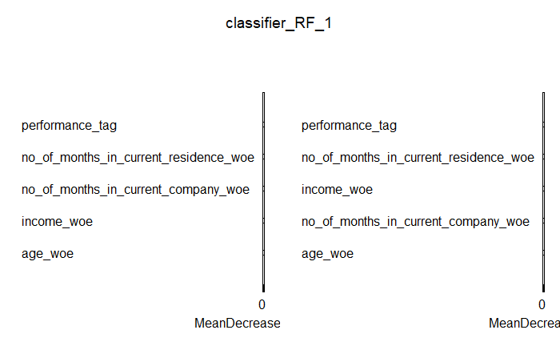
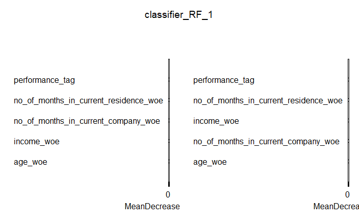

Bivariate Analysis
In the Bivariate Analysis, the correlation plot is easily identified for the demogs data and combined data in the above cluster of plots.
Then the dataset is briefly analysed by the scatter plots between Performance Tag and
- No of dependents
- Income
- No of months in current residence
- No of months in current residence
- No of times 90 dpd or worse in last 6 months
- No of times 60 dpd or worse in last 6 months
- No of times 30 dpd or worse in last 6 months
- No of times 90 dpd or worse in last 12 months
- No of times 60 dpd or worse in last 12 months
- No of times 30 dpd or worse in last 12 months
- Average CC utilisation in last 12 months
- Average CC utilisation in last 6 months
- No of Trades opened in last 12 months
- No of Trades opened in last 6 months
- No of PL Trades opened in last 12 months
- No of PL Trades opened in last 6 months
- Presence of Open Home loan
- Outstanding Balance
- Total No of trades
- Presence of Open Auto loan
## Univariate analysis of demogs data## Distribution of age shows that most of the people are among the range of 37-53. There is two outlier outcome less than 0 which are not acceptable for age variable.

## Distribution of gender represents that almost 76 percent of the clients are male.
## Distribution of marital status at the time of application represents that almost 85 percent of the clients are married.
## Distribution of education data shows that professionals, masters, and bachelors indicate the most three type of educated clients, 35, 33, and 25 percent respectively.
## Distribution of profession data shows that SAL is the most with number of 39674 of all clients.
## Distribution of type of residence data shows that 74% of the clients are renting the house and 20% have their own house.
## Distribution of number of dependents data shows that half of the observations are have 2, 3, and 4 dependents. Other have 1 or 5 dependents.

## Distribution of income data shows that half of the observations have $15-$40 income. The maximum income is $60.The minimum is -0.5 which is an outlier amount and it's not acceptable as income.

## Distribution of no of months in current residence represents that most of the observations relates to the 0 month in current residents.

## Distribution of no of months in current company represents that most of the clients are new in the company and max number months is 75 month.

## Bivariate analysis of demogs data## According to the results of correlation, there is no significant correlation between performance tag and other variables of the demogs data. The only positive correlation relates to no of months in current residence, 0.02. The negative correlations relates to income and no of months in current company which are, -0.04 and -0.02, respectively. Negative correlation is a relationship between two variables in which one variable increases as the other decreases, and vice versa.## The Correlation between Number of dependents and performance Tag is -0.000307697## The Correlation between Number of dependents and performance Tag is -0.03872444## The Correlation between Number of dependents and performance Tag is 0.01625466## The Correlation between Number of dependents and performance Tag is -0.01903269## application_id age no_of_dependents income
## application_id 1.00 0.00 -0.01 0.00
## age 0.00 1.00 0.17 0.06
## no_of_dependents -0.01 0.17 1.00 0.03
## income 0.00 0.06 0.03 1.00
## no_of_months_in_current_residence 0.00 -0.07 -0.01 -0.09
## no_of_months_in_current_company 0.00 -0.02 -0.01 -0.10
## performance_tag 0.00 0.00 0.00 -0.04
## no_of_months_in_current_residence
## application_id 0.00
## age -0.07
## no_of_dependents -0.01
## income -0.09
## no_of_months_in_current_residence 1.00
## no_of_months_in_current_company -0.08
## performance_tag 0.02
## no_of_months_in_current_company
## application_id 0.00
## age -0.02
## no_of_dependents -0.01
## income -0.10
## no_of_months_in_current_residence -0.08
## no_of_months_in_current_company 1.00
## performance_tag -0.02
## performance_tag
## application_id 0.00
## age 0.00
## no_of_dependents 0.00
## income -0.04
## no_of_months_in_current_residence 0.02
## no_of_months_in_current_company -0.02
## performance_tag 1.00
## tibble [69,870 x 19] (S3: tbl_df/tbl/data.frame)
## $ application_id : num [1:69870] 9.54e+08 4.33e+08 9.41e+08 3.92e+08 1.82e+08 ...
## $ no_of_times_90_dpd_or_worse_in_last_6_months : num [1:69870] 0 0 0 0 0 0 0 0 0 0 ...
## $ no_of_times_60_dpd_or_worse_in_last_6_months : num [1:69870] 0 0 0 0 0 0 0 0 0 0 ...
## $ no_of_times_30_dpd_or_worse_in_last_6_months : num [1:69870] 0 0 0 0 0 0 0 0 0 0 ...
## $ no_of_times_90_dpd_or_worse_in_last_12_months : num [1:69870] 0 0 0 0 0 0 0 0 0 0 ...
## $ no_of_times_60_dpd_or_worse_in_last_12_months : num [1:69870] 0 0 0 0 0 0 0 0 0 0 ...
## $ no_of_times_30_dpd_or_worse_in_last_12_months : num [1:69870] 0 0 0 0 0 0 0 0 1 0 ...
## $ avgas_cc_utilization_in_last_12_months : num [1:69870] 4 3 7 11 12 10 11 13 9 6 ...
## $ no_of_trades_opened_in_last_6_months : num [1:69870] 1 1 0 1 0 0 0 1 0 1 ...
## $ no_of_trades_opened_in_last_12_months : num [1:69870] 2 2 0 1 1 0 1 1 0 1 ...
## $ no_of_pl_trades_opened_in_last_6_months : num [1:69870] 0 0 0 0 0 0 0 0 0 0 ...
## $ no_of_pl_trades_opened_in_last_12_months : num [1:69870] 0 0 0 0 0 0 0 0 0 0 ...
## $ no_of_inquiries_in_last_6_months_excluding_home_auto_loans : num [1:69870] 0 0 0 0 0 0 0 0 0 0 ...
## $ no_of_inquiries_in_last_12_months_excluding_home_auto_loans: num [1:69870] 0 0 0 0 0 0 0 0 0 0 ...
## $ presence_of_open_home_loan : num [1:69870] 1 0 1 1 1 0 1 1 1 0 ...
## $ outstanding_balance : num [1:69870] 2999395 3078 3004972 3355373 3014283 ...
## $ total_no_of_trades : num [1:69870] 4 5 2 4 4 1 4 3 2 1 ...
## $ presence_of_open_auto_loan : num [1:69870] 0 0 0 1 0 0 0 0 0 1 ...
## $ performance_tag : num [1:69870] 0 0 0 0 0 0 0 0 0 0 ...
## - attr(*, "spec")=
## .. cols(
## .. `Application ID` = col_double(),
## .. `No of times 90 DPD or worse in last 6 months` = col_double(),
## .. `No of times 60 DPD or worse in last 6 months` = col_double(),
## .. `No of times 30 DPD or worse in last 6 months` = col_double(),
## .. `No of times 90 DPD or worse in last 12 months` = col_double(),
## .. `No of times 60 DPD or worse in last 12 months` = col_double(),
## .. `No of times 30 DPD or worse in last 12 months` = col_double(),
## .. `Avgas CC Utilization in last 12 months` = col_double(),
## .. `No of trades opened in last 6 months` = col_double(),
## .. `No of trades opened in last 12 months` = col_double(),
## .. `No of PL trades opened in last 6 months` = col_double(),
## .. `No of PL trades opened in last 12 months` = col_double(),
## .. `No of Inquiries in last 6 months (excluding home & auto loans)` = col_double(),
## .. `No of Inquiries in last 12 months (excluding home & auto loans)` = col_double(),
## .. `Presence of open home loan` = col_double(),
## .. `Outstanding Balance` = col_double(),
## .. `Total No of Trades` = col_double(),
## .. `Presence of open auto loan` = col_double(),
## .. `Performance Tag` = col_double()
## .. )## Univariate analysis of credit_bureau data## Distribution of No of times 90 dpd or worse in last 6_months represents that 78% are 0 and almost 19% are 1.
## Distribution of No of times 60 dpd or worse in last 6_months represents that more than 50000 of the clients relates to 0 amount.
## Distribution of No of times 30 dpd or worse in last 6 months represents that almost 50000 of the clients relates to 0 amount.
## Distribution of No of times 90 dpd or worse in last 12 months represents that almost 50000 of the clients relates to 0 amount.
## Distribution of No of times 60 dpd or worse in last 12 months represents that almost 45000 of the clients relates to 0 amount.
## Distribution of No of times 30 dpd or worse in last 12 months represents that almost 45000 of the clients relates to 0 amount.
## Distribution of Vgas cc_utilization in last 12_months represents that the mean of the data is 29.27.
## Distribution of no of trades opened in last 6_months represents that 20000 of trades 2 times in last 6 months.
## Distribution of no of trades opened in last 12_months represents that 11000 of trades 2 times in last 6 month.
## Distribution of No of pl trades opened in last 6_months represents that 0, 1, and 2 are the three most frequent pl trades in last 6 months.
## Distribution of No of pl trades opened in last 12_months represents that 0, 3, and 4 are the three most frequent pl trades in last 6 months.
## Distribution of No of inquiries in last 6_months represents that 0, 1, and 2 are the three most frequent pl trades in last 6 months.
## Distribution of no of inquiries in last 12_months excluding home_auto loans represents that 0, 2, 3, and are the four most frequent pl trades in last 6 months.
## Distribution of Presence of open home loan represents that 50000 observations relates to 0 amount and 20000 related to 1.
## Distribution of Total no of trades represents that the most amount is 3 with 9000 observations.
## Distribution of presence of open auto loan represents that the most amount is 0 with almost 60000 observations.
Bivariate Analysis of credit_bureau data
Among the different variables, the following variables have the most correlation with the performance tag. no_of_times_30_dpd_or_worse_in_last_6_months: 0.1 no_of_times_30_dpd_or_worse_in_last_12_months: 0.1 no_of_times_60_dpd_or_worse_in_last_6_months: 0.09 no_of_times_60_dpd_or_worse_in_last_12_months: 0.09 avgas_cc_utilization_in_last_12_months: 0.08 no_of_times_90_dpd_or_worse_in_last_6_months: 0.08
## The Correlation between no_of_inquiries_in_last_12_months_excluding_home_auto_loans and performance Tag is 0.05602722## The Correlation between presence_of_open_home_loan and performance Tag is -0.02547596## The Correlation between outstanding_balance and performance Tag is 0.001155206## The Correlation between total_no_of_trades and performance Tag is 0.0349171## The Correlation between presence_of_open_auto_loan and performance Tag is -0.007971069## The Correlation between avgas_cc_utilization_in_last_12_months and performance Tag is 0.08040627## The Correlation between no_of_trades_opened_in_last_6_months and performance Tag is 0.05069951## The Correlation between no_of_trades_opened_in_last_12_monthss and performance Tag is 0.05921629## The Correlation between no_of_pl_trades_opened_in_last_6_months and performance Tag is 0.07211644## The Correlation between no_of_pl_trades_opened_in_last_12_months and performance Tag is 0.07780216## The Correlation between no_of_inquiries_in_last_6_months_excluding_home_auto_loans and performance Tag is 0.04671557## The Correlation between no_of_times_90_dpd_or_worse_in_last_6_months and performance Tag is 0.08814223## The Correlation between no_of_times_60_dpd_or_worse_in_last_6_months and performance Tag is 0.09567882## The Correlation between no_of_times_30_dpd_or_worse_in_last_6_months and performance Tag is 0.1027773## The Correlation between no_of_times_90_dpd_or_worse_in_last_12_months and performance Tag is 0.09772734## The Correlation between no_of_times_60_dpd_or_worse_in_last_12_months and performance Tag is 0.09296393## The Correlation between no_of_times_30_dpd_or_worse_in_last_12_months and performance Tag is 0.1009908## application_id
## application_id 1.00
## no_of_times_90_dpd_or_worse_in_last_6_months 0.00
## no_of_times_60_dpd_or_worse_in_last_6_months 0.00
## no_of_times_30_dpd_or_worse_in_last_6_months 0.00
## no_of_times_90_dpd_or_worse_in_last_12_months 0.00
## no_of_times_60_dpd_or_worse_in_last_12_months 0.00
## no_of_times_30_dpd_or_worse_in_last_12_months 0.00
## avgas_cc_utilization_in_last_12_months 0.00
## no_of_trades_opened_in_last_6_months 0.00
## no_of_trades_opened_in_last_12_months 0.00
## no_of_pl_trades_opened_in_last_6_months 0.00
## no_of_pl_trades_opened_in_last_12_months 0.00
## no_of_inquiries_in_last_6_months_excluding_home_auto_loans 0.00
## no_of_inquiries_in_last_12_months_excluding_home_auto_loans 0.00
## presence_of_open_home_loan 0.00
## outstanding_balance 0.00
## total_no_of_trades 0.00
## presence_of_open_auto_loan 0.01
## performance_tag 0.00
## no_of_times_90_dpd_or_worse_in_last_6_months
## application_id 0.00
## no_of_times_90_dpd_or_worse_in_last_6_months 1.00
## no_of_times_60_dpd_or_worse_in_last_6_months 0.89
## no_of_times_30_dpd_or_worse_in_last_6_months 0.84
## no_of_times_90_dpd_or_worse_in_last_12_months 0.89
## no_of_times_60_dpd_or_worse_in_last_12_months 0.82
## no_of_times_30_dpd_or_worse_in_last_12_months 0.80
## avgas_cc_utilization_in_last_12_months 0.36
## no_of_trades_opened_in_last_6_months 0.14
## no_of_trades_opened_in_last_12_months 0.17
## no_of_pl_trades_opened_in_last_6_months 0.25
## no_of_pl_trades_opened_in_last_12_months 0.27
## no_of_inquiries_in_last_6_months_excluding_home_auto_loans 0.14
## no_of_inquiries_in_last_12_months_excluding_home_auto_loans 0.15
## presence_of_open_home_loan -0.11
## outstanding_balance -0.02
## total_no_of_trades 0.03
## presence_of_open_auto_loan -0.03
## performance_tag 0.09
## no_of_times_60_dpd_or_worse_in_last_6_months
## application_id 0.00
## no_of_times_90_dpd_or_worse_in_last_6_months 0.89
## no_of_times_60_dpd_or_worse_in_last_6_months 1.00
## no_of_times_30_dpd_or_worse_in_last_6_months 0.95
## no_of_times_90_dpd_or_worse_in_last_12_months 0.84
## no_of_times_60_dpd_or_worse_in_last_12_months 0.92
## no_of_times_30_dpd_or_worse_in_last_12_months 0.90
## avgas_cc_utilization_in_last_12_months 0.35
## no_of_trades_opened_in_last_6_months 0.15
## no_of_trades_opened_in_last_12_months 0.19
## no_of_pl_trades_opened_in_last_6_months 0.27
## no_of_pl_trades_opened_in_last_12_months 0.30
## no_of_inquiries_in_last_6_months_excluding_home_auto_loans 0.15
## no_of_inquiries_in_last_12_months_excluding_home_auto_loans 0.17
## presence_of_open_home_loan -0.12
## outstanding_balance -0.02
## total_no_of_trades 0.04
## presence_of_open_auto_loan -0.03
## performance_tag 0.10
## no_of_times_30_dpd_or_worse_in_last_6_months
## application_id 0.00
## no_of_times_90_dpd_or_worse_in_last_6_months 0.84
## no_of_times_60_dpd_or_worse_in_last_6_months 0.95
## no_of_times_30_dpd_or_worse_in_last_6_months 1.00
## no_of_times_90_dpd_or_worse_in_last_12_months 0.83
## no_of_times_60_dpd_or_worse_in_last_12_months 0.90
## no_of_times_30_dpd_or_worse_in_last_12_months 0.95
## avgas_cc_utilization_in_last_12_months 0.35
## no_of_trades_opened_in_last_6_months 0.16
## no_of_trades_opened_in_last_12_months 0.20
## no_of_pl_trades_opened_in_last_6_months 0.28
## no_of_pl_trades_opened_in_last_12_months 0.31
## no_of_inquiries_in_last_6_months_excluding_home_auto_loans 0.16
## no_of_inquiries_in_last_12_months_excluding_home_auto_loans 0.18
## presence_of_open_home_loan -0.12
## outstanding_balance -0.02
## total_no_of_trades 0.04
## presence_of_open_auto_loan -0.03
## performance_tag 0.10
## no_of_times_90_dpd_or_worse_in_last_12_months
## application_id 0.00
## no_of_times_90_dpd_or_worse_in_last_6_months 0.89
## no_of_times_60_dpd_or_worse_in_last_6_months 0.84
## no_of_times_30_dpd_or_worse_in_last_6_months 0.83
## no_of_times_90_dpd_or_worse_in_last_12_months 1.00
## no_of_times_60_dpd_or_worse_in_last_12_months 0.81
## no_of_times_30_dpd_or_worse_in_last_12_months 0.80
## avgas_cc_utilization_in_last_12_months 0.38
## no_of_trades_opened_in_last_6_months 0.15
## no_of_trades_opened_in_last_12_months 0.19
## no_of_pl_trades_opened_in_last_6_months 0.28
## no_of_pl_trades_opened_in_last_12_months 0.31
## no_of_inquiries_in_last_6_months_excluding_home_auto_loans 0.16
## no_of_inquiries_in_last_12_months_excluding_home_auto_loans 0.18
## presence_of_open_home_loan -0.13
## outstanding_balance -0.02
## total_no_of_trades 0.04
## presence_of_open_auto_loan -0.03
## performance_tag 0.10
## no_of_times_60_dpd_or_worse_in_last_12_months
## application_id 0.00
## no_of_times_90_dpd_or_worse_in_last_6_months 0.82
## no_of_times_60_dpd_or_worse_in_last_6_months 0.92
## no_of_times_30_dpd_or_worse_in_last_6_months 0.90
## no_of_times_90_dpd_or_worse_in_last_12_months 0.81
## no_of_times_60_dpd_or_worse_in_last_12_months 1.00
## no_of_times_30_dpd_or_worse_in_last_12_months 0.90
## avgas_cc_utilization_in_last_12_months 0.34
## no_of_trades_opened_in_last_6_months 0.13
## no_of_trades_opened_in_last_12_months 0.16
## no_of_pl_trades_opened_in_last_6_months 0.25
## no_of_pl_trades_opened_in_last_12_months 0.28
## no_of_inquiries_in_last_6_months_excluding_home_auto_loans 0.13
## no_of_inquiries_in_last_12_months_excluding_home_auto_loans 0.14
## presence_of_open_home_loan -0.11
## outstanding_balance -0.02
## total_no_of_trades 0.01
## presence_of_open_auto_loan -0.02
## performance_tag 0.09
## no_of_times_30_dpd_or_worse_in_last_12_months
## application_id 0.00
## no_of_times_90_dpd_or_worse_in_last_6_months 0.80
## no_of_times_60_dpd_or_worse_in_last_6_months 0.90
## no_of_times_30_dpd_or_worse_in_last_6_months 0.95
## no_of_times_90_dpd_or_worse_in_last_12_months 0.80
## no_of_times_60_dpd_or_worse_in_last_12_months 0.90
## no_of_times_30_dpd_or_worse_in_last_12_months 1.00
## avgas_cc_utilization_in_last_12_months 0.34
## no_of_trades_opened_in_last_6_months 0.14
## no_of_trades_opened_in_last_12_months 0.18
## no_of_pl_trades_opened_in_last_6_months 0.26
## no_of_pl_trades_opened_in_last_12_months 0.29
## no_of_inquiries_in_last_6_months_excluding_home_auto_loans 0.14
## no_of_inquiries_in_last_12_months_excluding_home_auto_loans 0.16
## presence_of_open_home_loan -0.11
## outstanding_balance -0.02
## total_no_of_trades 0.01
## presence_of_open_auto_loan -0.03
## performance_tag 0.10
## avgas_cc_utilization_in_last_12_months
## application_id 0.00
## no_of_times_90_dpd_or_worse_in_last_6_months 0.36
## no_of_times_60_dpd_or_worse_in_last_6_months 0.35
## no_of_times_30_dpd_or_worse_in_last_6_months 0.35
## no_of_times_90_dpd_or_worse_in_last_12_months 0.38
## no_of_times_60_dpd_or_worse_in_last_12_months 0.34
## no_of_times_30_dpd_or_worse_in_last_12_months 0.34
## avgas_cc_utilization_in_last_12_months 1.00
## no_of_trades_opened_in_last_6_months 0.09
## no_of_trades_opened_in_last_12_months 0.13
## no_of_pl_trades_opened_in_last_6_months 0.24
## no_of_pl_trades_opened_in_last_12_months 0.27
## no_of_inquiries_in_last_6_months_excluding_home_auto_loans 0.09
## no_of_inquiries_in_last_12_months_excluding_home_auto_loans 0.10
## presence_of_open_home_loan -0.13
## outstanding_balance -0.03
## total_no_of_trades -0.01
## presence_of_open_auto_loan -0.04
## performance_tag 0.08
## no_of_trades_opened_in_last_6_months
## application_id 0.00
## no_of_times_90_dpd_or_worse_in_last_6_months 0.14
## no_of_times_60_dpd_or_worse_in_last_6_months 0.15
## no_of_times_30_dpd_or_worse_in_last_6_months 0.16
## no_of_times_90_dpd_or_worse_in_last_12_months 0.15
## no_of_times_60_dpd_or_worse_in_last_12_months 0.13
## no_of_times_30_dpd_or_worse_in_last_12_months 0.14
## avgas_cc_utilization_in_last_12_months 0.09
## no_of_trades_opened_in_last_6_months 1.00
## no_of_trades_opened_in_last_12_months 0.94
## no_of_pl_trades_opened_in_last_6_months 0.88
## no_of_pl_trades_opened_in_last_12_months 0.83
## no_of_inquiries_in_last_6_months_excluding_home_auto_loans 0.67
## no_of_inquiries_in_last_12_months_excluding_home_auto_loans 0.73
## presence_of_open_home_loan -0.12
## outstanding_balance 0.17
## total_no_of_trades 0.89
## presence_of_open_auto_loan -0.04
## performance_tag 0.05
## no_of_trades_opened_in_last_12_months
## application_id 0.00
## no_of_times_90_dpd_or_worse_in_last_6_months 0.17
## no_of_times_60_dpd_or_worse_in_last_6_months 0.19
## no_of_times_30_dpd_or_worse_in_last_6_months 0.20
## no_of_times_90_dpd_or_worse_in_last_12_months 0.19
## no_of_times_60_dpd_or_worse_in_last_12_months 0.16
## no_of_times_30_dpd_or_worse_in_last_12_months 0.18
## avgas_cc_utilization_in_last_12_months 0.13
## no_of_trades_opened_in_last_6_months 0.94
## no_of_trades_opened_in_last_12_months 1.00
## no_of_pl_trades_opened_in_last_6_months 0.89
## no_of_pl_trades_opened_in_last_12_months 0.93
## no_of_inquiries_in_last_6_months_excluding_home_auto_loans 0.72
## no_of_inquiries_in_last_12_months_excluding_home_auto_loans 0.79
## presence_of_open_home_loan -0.14
## outstanding_balance 0.19
## total_no_of_trades 0.94
## presence_of_open_auto_loan -0.05
## performance_tag 0.06
## no_of_pl_trades_opened_in_last_6_months
## application_id 0.00
## no_of_times_90_dpd_or_worse_in_last_6_months 0.25
## no_of_times_60_dpd_or_worse_in_last_6_months 0.27
## no_of_times_30_dpd_or_worse_in_last_6_months 0.28
## no_of_times_90_dpd_or_worse_in_last_12_months 0.28
## no_of_times_60_dpd_or_worse_in_last_12_months 0.25
## no_of_times_30_dpd_or_worse_in_last_12_months 0.26
## avgas_cc_utilization_in_last_12_months 0.24
## no_of_trades_opened_in_last_6_months 0.88
## no_of_trades_opened_in_last_12_months 0.89
## no_of_pl_trades_opened_in_last_6_months 1.00
## no_of_pl_trades_opened_in_last_12_months 0.90
## no_of_inquiries_in_last_6_months_excluding_home_auto_loans 0.60
## no_of_inquiries_in_last_12_months_excluding_home_auto_loans 0.65
## presence_of_open_home_loan -0.14
## outstanding_balance 0.17
## total_no_of_trades 0.79
## presence_of_open_auto_loan -0.05
## performance_tag 0.07
## no_of_pl_trades_opened_in_last_12_months
## application_id 0.00
## no_of_times_90_dpd_or_worse_in_last_6_months 0.27
## no_of_times_60_dpd_or_worse_in_last_6_months 0.30
## no_of_times_30_dpd_or_worse_in_last_6_months 0.31
## no_of_times_90_dpd_or_worse_in_last_12_months 0.31
## no_of_times_60_dpd_or_worse_in_last_12_months 0.28
## no_of_times_30_dpd_or_worse_in_last_12_months 0.29
## avgas_cc_utilization_in_last_12_months 0.27
## no_of_trades_opened_in_last_6_months 0.83
## no_of_trades_opened_in_last_12_months 0.93
## no_of_pl_trades_opened_in_last_6_months 0.90
## no_of_pl_trades_opened_in_last_12_months 1.00
## no_of_inquiries_in_last_6_months_excluding_home_auto_loans 0.66
## no_of_inquiries_in_last_12_months_excluding_home_auto_loans 0.73
## presence_of_open_home_loan -0.16
## outstanding_balance 0.20
## total_no_of_trades 0.83
## presence_of_open_auto_loan -0.05
## performance_tag 0.08
## no_of_inquiries_in_last_6_months_excluding_home_auto_loans
## application_id 0.00
## no_of_times_90_dpd_or_worse_in_last_6_months 0.14
## no_of_times_60_dpd_or_worse_in_last_6_months 0.15
## no_of_times_30_dpd_or_worse_in_last_6_months 0.16
## no_of_times_90_dpd_or_worse_in_last_12_months 0.16
## no_of_times_60_dpd_or_worse_in_last_12_months 0.13
## no_of_times_30_dpd_or_worse_in_last_12_months 0.14
## avgas_cc_utilization_in_last_12_months 0.09
## no_of_trades_opened_in_last_6_months 0.67
## no_of_trades_opened_in_last_12_months 0.72
## no_of_pl_trades_opened_in_last_6_months 0.60
## no_of_pl_trades_opened_in_last_12_months 0.66
## no_of_inquiries_in_last_6_months_excluding_home_auto_loans 1.00
## no_of_inquiries_in_last_12_months_excluding_home_auto_loans 0.91
## presence_of_open_home_loan -0.12
## outstanding_balance 0.11
## total_no_of_trades 0.71
## presence_of_open_auto_loan -0.04
## performance_tag 0.05
## no_of_inquiries_in_last_12_months_excluding_home_auto_loans
## application_id 0.00
## no_of_times_90_dpd_or_worse_in_last_6_months 0.15
## no_of_times_60_dpd_or_worse_in_last_6_months 0.17
## no_of_times_30_dpd_or_worse_in_last_6_months 0.18
## no_of_times_90_dpd_or_worse_in_last_12_months 0.18
## no_of_times_60_dpd_or_worse_in_last_12_months 0.14
## no_of_times_30_dpd_or_worse_in_last_12_months 0.16
## avgas_cc_utilization_in_last_12_months 0.10
## no_of_trades_opened_in_last_6_months 0.73
## no_of_trades_opened_in_last_12_months 0.79
## no_of_pl_trades_opened_in_last_6_months 0.65
## no_of_pl_trades_opened_in_last_12_months 0.73
## no_of_inquiries_in_last_6_months_excluding_home_auto_loans 0.91
## no_of_inquiries_in_last_12_months_excluding_home_auto_loans 1.00
## presence_of_open_home_loan -0.13
## outstanding_balance 0.12
## total_no_of_trades 0.78
## presence_of_open_auto_loan -0.05
## performance_tag 0.06
## presence_of_open_home_loan
## application_id 0.00
## no_of_times_90_dpd_or_worse_in_last_6_months -0.11
## no_of_times_60_dpd_or_worse_in_last_6_months -0.12
## no_of_times_30_dpd_or_worse_in_last_6_months -0.12
## no_of_times_90_dpd_or_worse_in_last_12_months -0.13
## no_of_times_60_dpd_or_worse_in_last_12_months -0.11
## no_of_times_30_dpd_or_worse_in_last_12_months -0.11
## avgas_cc_utilization_in_last_12_months -0.13
## no_of_trades_opened_in_last_6_months -0.12
## no_of_trades_opened_in_last_12_months -0.14
## no_of_pl_trades_opened_in_last_6_months -0.14
## no_of_pl_trades_opened_in_last_12_months -0.16
## no_of_inquiries_in_last_6_months_excluding_home_auto_loans -0.12
## no_of_inquiries_in_last_12_months_excluding_home_auto_loans -0.13
## presence_of_open_home_loan 1.00
## outstanding_balance 0.94
## total_no_of_trades -0.10
## presence_of_open_auto_loan 0.02
## performance_tag -0.03
## outstanding_balance
## application_id 0.00
## no_of_times_90_dpd_or_worse_in_last_6_months -0.02
## no_of_times_60_dpd_or_worse_in_last_6_months -0.02
## no_of_times_30_dpd_or_worse_in_last_6_months -0.02
## no_of_times_90_dpd_or_worse_in_last_12_months -0.02
## no_of_times_60_dpd_or_worse_in_last_12_months -0.02
## no_of_times_30_dpd_or_worse_in_last_12_months -0.02
## avgas_cc_utilization_in_last_12_months -0.03
## no_of_trades_opened_in_last_6_months 0.17
## no_of_trades_opened_in_last_12_months 0.19
## no_of_pl_trades_opened_in_last_6_months 0.17
## no_of_pl_trades_opened_in_last_12_months 0.20
## no_of_inquiries_in_last_6_months_excluding_home_auto_loans 0.11
## no_of_inquiries_in_last_12_months_excluding_home_auto_loans 0.12
## presence_of_open_home_loan 0.94
## outstanding_balance 1.00
## total_no_of_trades 0.19
## presence_of_open_auto_loan 0.05
## performance_tag 0.00
## total_no_of_trades
## application_id 0.00
## no_of_times_90_dpd_or_worse_in_last_6_months 0.03
## no_of_times_60_dpd_or_worse_in_last_6_months 0.04
## no_of_times_30_dpd_or_worse_in_last_6_months 0.04
## no_of_times_90_dpd_or_worse_in_last_12_months 0.04
## no_of_times_60_dpd_or_worse_in_last_12_months 0.01
## no_of_times_30_dpd_or_worse_in_last_12_months 0.01
## avgas_cc_utilization_in_last_12_months -0.01
## no_of_trades_opened_in_last_6_months 0.89
## no_of_trades_opened_in_last_12_months 0.94
## no_of_pl_trades_opened_in_last_6_months 0.79
## no_of_pl_trades_opened_in_last_12_months 0.83
## no_of_inquiries_in_last_6_months_excluding_home_auto_loans 0.71
## no_of_inquiries_in_last_12_months_excluding_home_auto_loans 0.78
## presence_of_open_home_loan -0.10
## outstanding_balance 0.19
## total_no_of_trades 1.00
## presence_of_open_auto_loan -0.04
## performance_tag 0.04
## presence_of_open_auto_loan
## application_id 0.01
## no_of_times_90_dpd_or_worse_in_last_6_months -0.03
## no_of_times_60_dpd_or_worse_in_last_6_months -0.03
## no_of_times_30_dpd_or_worse_in_last_6_months -0.03
## no_of_times_90_dpd_or_worse_in_last_12_months -0.03
## no_of_times_60_dpd_or_worse_in_last_12_months -0.02
## no_of_times_30_dpd_or_worse_in_last_12_months -0.03
## avgas_cc_utilization_in_last_12_months -0.04
## no_of_trades_opened_in_last_6_months -0.04
## no_of_trades_opened_in_last_12_months -0.05
## no_of_pl_trades_opened_in_last_6_months -0.05
## no_of_pl_trades_opened_in_last_12_months -0.05
## no_of_inquiries_in_last_6_months_excluding_home_auto_loans -0.04
## no_of_inquiries_in_last_12_months_excluding_home_auto_loans -0.05
## presence_of_open_home_loan 0.02
## outstanding_balance 0.05
## total_no_of_trades -0.04
## presence_of_open_auto_loan 1.00
## performance_tag -0.01
## performance_tag
## application_id 0.00
## no_of_times_90_dpd_or_worse_in_last_6_months 0.09
## no_of_times_60_dpd_or_worse_in_last_6_months 0.10
## no_of_times_30_dpd_or_worse_in_last_6_months 0.10
## no_of_times_90_dpd_or_worse_in_last_12_months 0.10
## no_of_times_60_dpd_or_worse_in_last_12_months 0.09
## no_of_times_30_dpd_or_worse_in_last_12_months 0.10
## avgas_cc_utilization_in_last_12_months 0.08
## no_of_trades_opened_in_last_6_months 0.05
## no_of_trades_opened_in_last_12_months 0.06
## no_of_pl_trades_opened_in_last_6_months 0.07
## no_of_pl_trades_opened_in_last_12_months 0.08
## no_of_inquiries_in_last_6_months_excluding_home_auto_loans 0.05
## no_of_inquiries_in_last_12_months_excluding_home_auto_loans 0.06
## presence_of_open_home_loan -0.03
## outstanding_balance 0.00
## total_no_of_trades 0.04
## presence_of_open_auto_loan -0.01
## performance_tag 1.00


 ## Conclusion from the Logistic regression models
## Conclusion from the Logistic regression models

 
